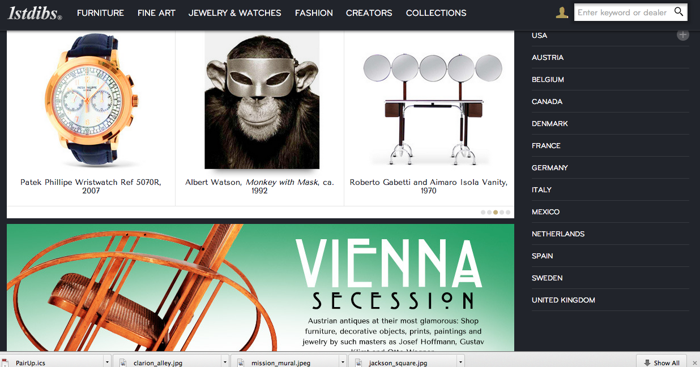
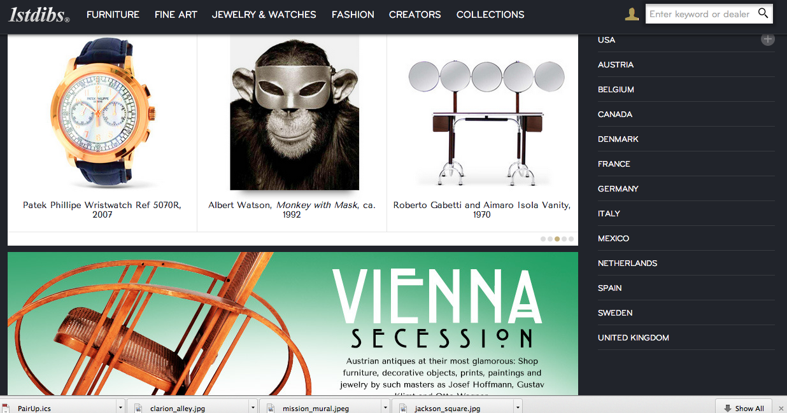
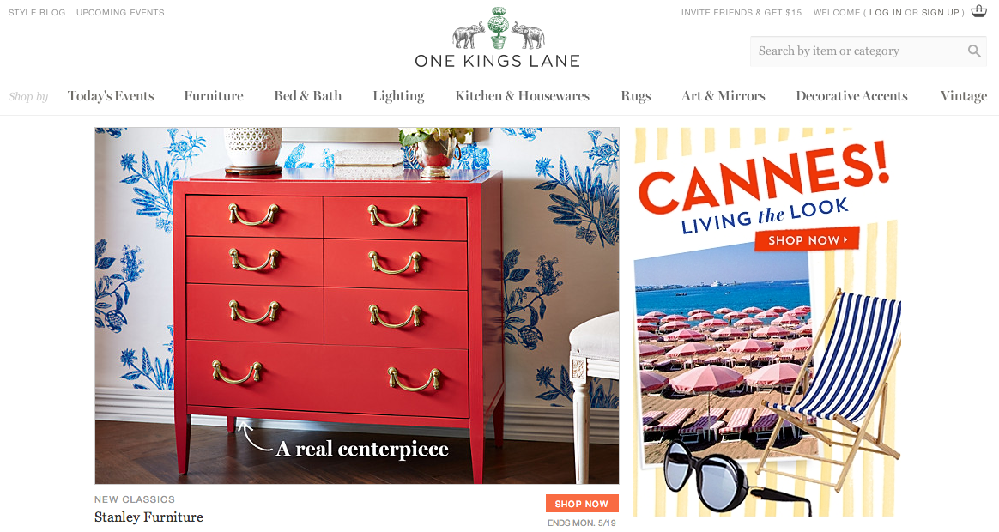

WIREFRAME SITES
For these three sites I chose to compare the homepages "above the fold" to see where I would be tempted to click first.
1stDibs
The page is directing the user to begin browsing the featured items. The large featured article limits the space for the product images, so the slideshow allows for more items to be shown.
 

One Kings Lane
The featured sale takes up the most "clickable" area, with the flash sale (that will be ending sooner) placed right beside it. One of the challenges is to direct users to the flash sale so that deeply discounted merchandise will be seen and sold.
Apartment Therapy
The featured article is prominent, so the problem of where to start reading first is solved. The banner add at the top of the page could be slightly distracting, but since it is given enough space from the content it is easily ignored.